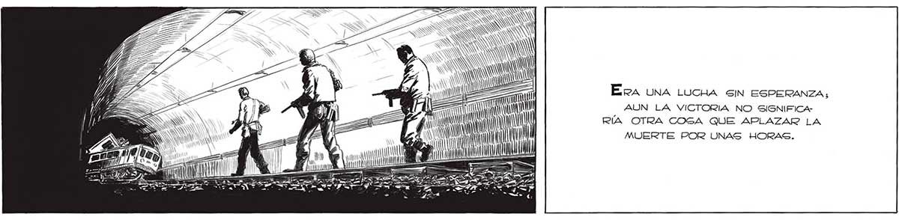
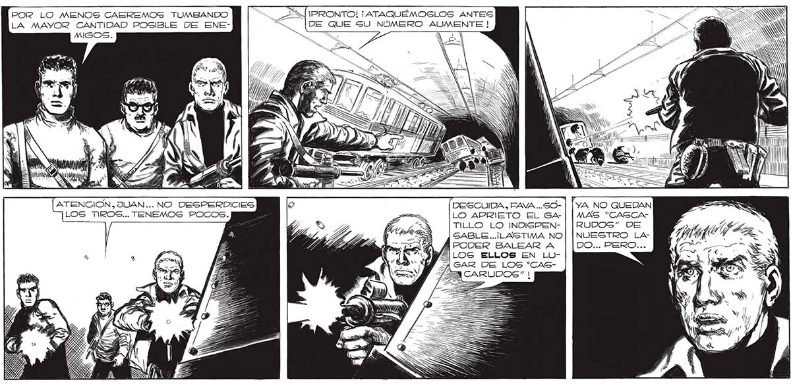

230 ¿<A = A - SS NN a SS NS SS S SS SN : SN ell | EN a o es PAS ¿Ja Era UNA LUCHA SIN ESPERANZA, A ai MN AUN LA VICTORIA NO SIGNIFICA: an AN | RÍA OTRA COSA QUE APLAZAR LA CAN IN MUERTE POR UNAS HORAS. PO BA l- BA IN nl POR LO MENOS CAEREMOS TUMBANDO O ¡PRONTO! ¡ATAQUÉMOSLOS ANTES LA MAYOR CANTIDAD POSIBLE DE ENE- <ÁÍ " DE QUE SU NÚMERO oleada A AF MS _— SA NN Y 7 Y) == gai, e] ATENCION, JUAN... NO DESPERDICIES DESCUIDA. FAVA..S5O- | [yA NO QUEDAN LOS TIROS... TENEMOS POCOS. a LO APRIETO EL GA4-| | MAS “CASCA$ 3A TILLO LO INDISPEN- | |RUDOS” DE GABLE...¡LASTIMA NO| | NUESTRO LAA PODER BALEAR A YA LOS ELLOS EN LUOA GAR DE LOS “CASA NN N Ñ

